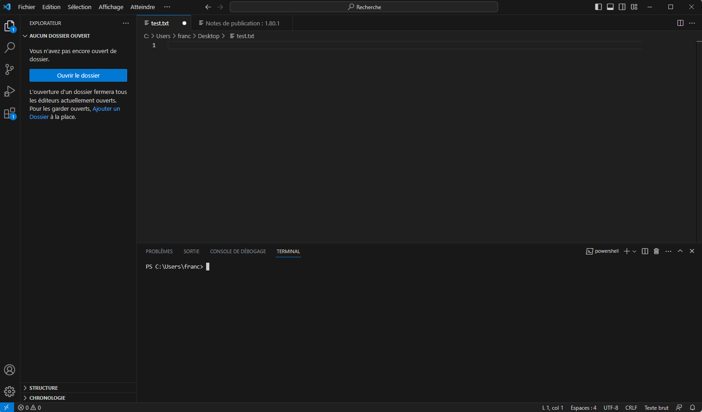

Vsc et terminal
Les différentes manières d'invoquer un terminal avec visual studio code. C'est un condensé de la documentation officielle qui bien plus complète :
Palette de commande
Si vous tapez >terminal dans la palette de commande, vous verrez toutes les commandes qui ont terminal dans leur nom. Il y a des commandes spécifiques à un langage (javascript, python, etc) et certaines très générales comme : Open New External Terminal qui ouvre un terminal dans le dossier de votre projet.
Intégration dans vscode
Ouvrir un terminal
On peut ouvrir un terminal dans : menu Terminal > nouveau Terminal :
Ce qui donne quelque chose du type :

Les différents panels du dessus du terminal (PROBLEMES, OUTPUT, CONSOLE DE DEBOGAGE et TERMINAL) dans vscode sont des sorties d'autres processus.
on reste donc 99% du temps sur TERMINAL (qui est en sur-brillance).
Supprimer un terminal
On peut supprimer (en cliquant sur la poubelle) et créer (menu Terminal > Nouveau terminal) autant de terminal que l'on le veut. On peut aussi juste fermer la fenêtre du terminal en cliquant sur la croix.
Créer un nouveau terminal
Notez bien que menu Affichage > Terminal ouvre le terminal courant, il n'en recrée pas un. C'est donc la commande à utiliser par défaut pour garder l'historique de ses commandes en utilisant la flèche du haut, qui remets la dernière commande utilisée.
Lorsque vous voulez créer un nouveau terminal, c'est dans menu Terminal > Nouveau Terminal.
Exécuter du python via le terminal
Vous pouvez utiliser le terminal pour exécuter vos programmes python.
Ouvrez ou refaite le projet d'introduction vscode et python
Remarquez que lorsque vous exécutez le code, vscode exécute une ligne de commande dans le terminal :
nom-du-programme-python fichier-à-exécuter
Une fois le programme exécuté, vscode vous laisse dans le terminal. Vous pouvez alors facilement re-exécuter votre programme en tapant sur la flèche du haut sur votre clavier. Ceci à pour effet de rappeler la commande précédente pour l'exécuter à nouveau en appuyant sur la touche entrée.
Cette technique est utile pour connaître l'interpréteur utilisé par vscode.
- commencez par exécuter un programme python avec le triangle
- tapez la flèche du haut pour rappeler la commande
Vous aurez alors la commande :
nom-du-programme-python fichier-à-exécuter
Vous pouvez alors :
- soit copier le
nom-du-programme-pythonpour l'utiliser dans un autre terminal - soit supprimez la fin de la commande (le nom du fichier à exécuter) pour ne garder que le programme python utilisé.
Nous allons refaire ce processus à la main.
Ouvrez un terminal dans vscode : menu Affichage > Terminal.
Déterminer votre nom-du-programme-python, puis exécutez le dans un autre terminal.

Dans l'interpréteur (à côté des >>>, qu'on appelle invite de commande ou prompt) :
Tapez :
print("Bonjour monde !")Puis appuyez sur la touche entrée.
Vous devriez avoir quelque chose du genre à la sortie :

Ca a l'air d'avoir marché. La ligne de code a affiché à l'écran Bonjour Monde, puis l'invite de commande est revenue (une fois l'instruction exécutée, on attend la suivante).
Pour quitter l'interpréteur python :
Tapez quit() puis appuyez sur la touche entrée.
l’intérêt d'utiliser le terminal est que l'on peut :
- utiliser la flèche du haut du clavier pour rappeler la commande précédente. Cela va plus vite que de se déplacer sur le triangle
- on peut exécuter le code sans être sur l'onglet du fichier à exécuter
Exécutez le fichier main.py via le terminal en respectant la forme générale d'une exécution d'un code python :